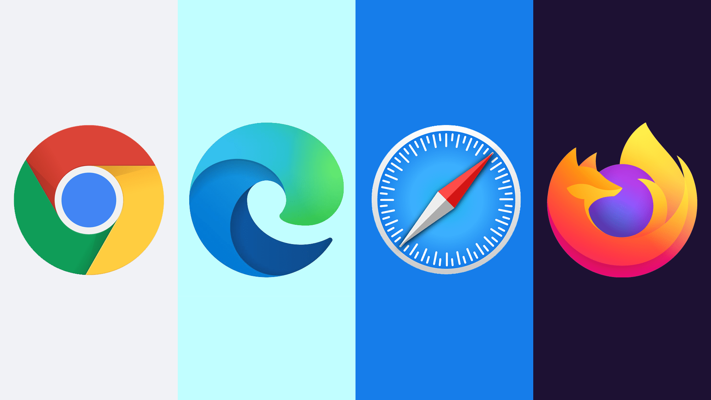

Un navigateur Web est un logiciel utilisé pour parcourir le WWW (world wide web). Il sert de client HTTP pour se connecter aux serveurs qui transmettront les pages Web sur l'ordinateur.
Avec un navigateur, on peut utiliser ensuite un moteur de recherche, qui permettra de trouver le site, ou de trouver les résultats les plus appropriés a votre recherche.